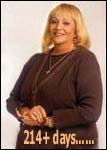
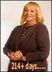
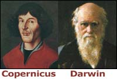
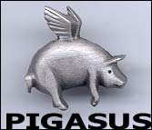
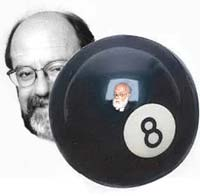

Recientemente, en un chat directo de MSN, Sylvia Browne (quien ahora lleva más de 214 días en nuestro reloj, que pueden ver en nuestra página principal) le mintió a su audiencia al decir que yo no había hecho ningún intento de contactarla con respecto a su promesa de ser examinada por la JREF. Y supongo que no puedo culparla, lo cierto es que ella sabe muy bien que nunca podría pasar un examen simple y apropiado sobre sus reclamos paranormales y, así, cumplir su promesa. Pero debo mantener las cosas claras, por lo que publico este artículo. El lector Scott Kinkade apunta:
Estoy seguro que has notado el lenguaje particular que Sylvia Browne utilizó, en el chat de MSN, en sus respuestas a las preguntas sobre el reto. Ella se refirió a tu reto y a “tu fallo al no intentar contactarla” como si se tratasen de eventos que ocurrieron en el pasado lejano. En vez de decir algo como “él no me ha contactado”“, ella decidió esta declaración final, “esperé y él nunca me contactó”.
Puedes estar seguro que de ahora en adelante Sylvia se dirá a sí misma y a todos los que la quieran escuchar, que tu reto y su aceptación al mismo fueron eventos que llegaron y se fueron sin dejar resultados satisfactorios, como una propuesta para unir dos empresas que termina siendo abandonada. Si le vuelven a preguntar seguro que responderá algo como “Oh, ¿eso? No, eso nunca ocurrió”. Con el tiempo ella lo hará parecer como que fuiste tu quien te retiraste. Todos sus seguidores le creerán y tus asociados, como siempre, serán capaces de ver la verdad.
Así es, Scott. Por lo tanto, para que no queden dudas sobre este asunto, aquí está una copia de la carta que le he enviado —más de una vez, la última vez fue la semana pasada— a la señora Browne:
Sylvia Browne, Sylvia Browne CorporationSociety of Novus Spiritus35 Dillon AvenueCampbell, CA 9500826 de marzo de 2002
(Esta es una copia de la carta, originalmente enviada a usted el 18 de marzo, 2001).
Señora Browne, usted aceptó el 6 de marzo de 2001, por televisión y a través del programa Larry King Live, ser examinada por esta Fundación por el reto al premio del millón de dólares, ofrecido por nosotros y descrito en nuestra página web www.randi.org.
Estamos listos para discutir los parámetros de este examen, con usted o sus representantes, ya sea sobre su reclamo de que mantiene contacto con gente muerta, o que puede predecir el futuro o cualquier otra habilidad paranoramal, oculta o sobrenatural. Estos exámenes han sido diseñados para que muestren claramente si sus reclamos son válidos o no.
Tenemos ofertas de varias de las más grandes y reconocidas facultades de universidades, aquí en Estados Unidos, que se han ofrecido a colaborar y ayudar en la elaboración y la implementación de estas pruebas. Puede estar segura que las personas de la Fundación Educacional de James Randi no estarán involucradas en ninguna forma que pueda afectar el resultado o la implementación de cualquiera de las pruebas.
Estamos a la espera, con mucho interés, de cualquier respuesta a esta declaración y a su aceptación como fuera anunciada previamente. Las direcciones, los teléfonos y los números de fax, además de los contactos a través del internet y correo electrónico de la Fundación van aquí listados para su conveniencia.
Gracias por su atención a este cuestionamiento.
Firmado,
Correo certificado, 26 de marzo/02
James Randi
Y, para definitivamente aterrizar este asunto sobre tierra firme, aquí están los últimos documentos de correos certificados que tenemos en archivo:


(El lector más observador quizás se sorprenda por el hecho de que más de 395 días han pasado desde la fecha (6 de marzo de 2001) la primera vez que Sylvia acordó tomar la prueba de la JREF y no los más de 214 que están en el reloj de Sylvia en nuestra página principal. Esto se explica por el hecho de que su aceptación el 6 de marzo, 2001 - la cual fue realizada en vivo, en televisión internacional - fue hecha antes de que yo tuviera la oportunidad de formular las reglas exactas para una prueba. Estas reglas tendrían que realizarse antes para que la señora Browne luego sepa con seguridad si estaba dispuesta a tomar el examen o no. Ya hemos enviado este protocolo a la señora - el 3 de septiembre de 2001 - y el reloj comenzó a contar desde ese día).
Aparentemente, a Sylvia no le importa el diseño de la prueba, aunque lo cierto es que no lo sabemos porque ella no responde a nuestros cuestionamientos….
El lector Peter Himmelreich, un técnico de emergencias médicas, nos ofrece este análisis sobre la práctica del “manejo de culebras” y la “ingestión de veneno” que algunos, especialmente aquellos que viven en las regiones sureñas de las montañas del Apalache, que las practican aún dentro de sus ceremonias religiosas. El movimiento se originó en 1910 y está basado en los primeros versos del Corintio, 13:8-10. Pero Peter tiene una visión mucho más informada que nosostros sobre esta actuación “sobrenatural”:
Encuentro su página web muy informativa, me gusta porque ofrece pensamientos críticos y metodología científica, algo que necesita nuestra sociedad cuando se trata de manejar asuntos de reclamos “paranormales”. Recientemente y por puro entretenimiento me quedé mirando el programa de televisión “Beyond Bizarre” [más allá de lo extraño] donde mostraban a cristianos fundamentalistas bailando con serpientes de cascabel y bebiendo veneno para ratas. Según el programa, muchos individuos allí han sido mordidos cientos de veces y, una prueba de laboratorio mostraba que el líquido sí se trataba de veneno para ratas.
Las implicaciones parecían ser que:
Esto es inexplicable por medios científicos, que adultos puedan ingerir veneno para ratas y ser mordidos por serpientes de cascabel y, sobrevivir. Además,
si todo esto está ocurriendo debemos entonces explicarlo buscando respuestas paranormales (o milagrosas).
Este reclamo me pareció bastante cómico (aunque me parece triste ver cómo engañan a gente sincera) aún con el poquito de conocimiento que tengo. Debido al entrenamiento que recibí para convertirme en un Técnico de Emergencias Médicas, aprendí que contrario al “sentido común” (que muchas veces es pura basura) las mordidas de las serpientes de cascabel NO son comúnmente fatales en adultos que no presentan problemas médicos adicionales y severos.
Más aún, aprendí que las ideas sobre cuáles sustancias son en realidad más venenosas, son, de hecho, contra-intuitivas. Por ejemplo, mi instructor nos decía que un adulto puede sobrevivir luego de ingerir un contenedor repleto de veneno de rata mientras que una tapita llena de una mezcla de sustancias para limpiar los muebles, podría matar a varios adultos, además, una interacción de alcohol con ciertos medicamentos que se venden sin receta podría ser letal. Por lo tanto, que adultos sobrevivan las mordidas de serpientes de cascabel y la ingestión de veneno para ratas NO es para nada milagroso sino un hecho ¡bien conocido en la medicina! Así que ¡no hay nada “extraño” al respecto!
Añadiré esta observación a las de Peter: hace varios años en Canadá, un familiar de sexo masculino que había sido entrenado en farmacología se atrevió a probar una gota de “veneno para ratas” (el más usado comúnmente es strychnine) que encontró en una botella que era usada en reuniones de fanáticos religiosos a quienes les encanta hacer estas cosas raras. Reportó que era extremadamente amargo y, el valiente hombre también descubrió que, cuando más tarde produjo soluciones de esta sustancia, cada vez más y más diluídas, casi cualquier concentración - aún cuando estaban ya bien, pero bien, diluídas - mantenía el mismo grado amargo en su sabor. Al buscar la dosis considerada suficiente para que cause serios efectos en un ser humano, y conociendo las concentraciones que preparaba para sus pruebas, concluyó que ciertamente no había sustancia suficiente en las soluciones que los fanáticos tomaban. De hecho, si recuerdo correctamente, me dijo que tendrían que consumir varios litros del cóctel para tan siquiera comenzar a notar un efecto real. Y la costumbre es que los bailarines tomen un traguito y declaren un milagro.

Además, por lo regular escuchamos que esta gente que maneja las serpientes son mordidas y mueren como resultado de esto. Por ejemplo, aquí tenemos a John Wayne “Punkin” Brown, Jr., pastor de la iglesia Pentecostal, de 34 años, justo antes que fuera fatalmente mordido en un dedo en 1998. Así que ¿dónde está el milagro?
Recordarán ustedes que ahora en la JREF somos dueños de un contador eléctrico real (¡glup!). La autora Paulette Cooper, en su libro que escribiera en 1970 El escándalo de la Cienciología, discute sobre el “e-metro” de la Cienciología y, me ha dado permiso para que comparta este extracto de su libro con mis lectores. Pero recomiendo, a los que tienen más interés en este tema, que obtengan el libro, publicado por Tower Books. Una versión en la red también está disponible.
L. Ron Hubbard declaró que “el e-metro nunca se equivoca. Lo ve todo; lo sabe todo. Lo dice todo.”
Una parte importante en las sesiones de “auditorías” de la Cienciología es el e-metro. Atrae a las personas hacia la Cienciología y, para algunos, provee con una base científica los métodos usados. Los Cienciólogos son aceptados o expulsados según las revelaciones del contador. Ayuda a extraer los secretos y las confesiones más íntimas de los Cienciólogos, incluyendo aquellas de naturaleza sexual y criminal. Ayuda a determinar la longitud, la intensidad y la naturaleza de las sesiones de auditorías. Ayuda a determinar las fechas y los detalles de sus problemas presentes y en sus vidas pasadas.
De hecho, el e-metro a menudo determina si han tenido vidas pasadas. Si alguien cree que no ha vivido antes pero el e-metro no responde a una fecha en la vida presente de la persona, entonces debe creer que ese evento debió haber ocurrido en una vida pasada.
El e-metro o electroencefaloneuromentimografo mide como diez por seis por dos pulgadas y su apariencia fue descrita por un reportero como una “mezcla entre un contador de velocidad de un carro y la máquina para dar corrientazos de un comediante”. Hubbard, por lo general, se refiere a su inventor como “Mathison” y los Cienciólogos te dirán que fue inventado por Olin Mathison; lo cierto es que fue inventado por Volney Mathison, un quiropráctico.
Comprar la máquina en un Org [una especie de almacén/oficina de la Cienciología] cuesta [1970] como 162 dólares; en 1963 el gobierno determinó que sólo costaba 12.50 dólares hacerla y que las organizaciones de cienciología la compraban al por mayor por sólo 47 dólares.
Randi añade: el modelo más reciente de este aparato —el “Mark Super VII Quantum”— cuesta el sorprendente precio de 4,650 dólares, aunque debemos considerar que este tiene “nuevos electrodos y limpiadoras”. Por supuesto, el creyente no paga ese precio sino que dona esta cantidad de dinero para recibirlo. Es una iglesia, ¿no lo saben ustedes? Y, como todas las iglesias, nosotros pagamos para sostener su mitología y pagamos sus impuestos. ¿Por qué tengo la impresión —otra vez— de que estoy en el negocio equivocado…? La “Fuente”, revista publicada por la iglesia de la Cienciología, tiene una página titulada, “Índice de donaciones” que en cualquier otro negocio se llamaría “Precios de la mercancía”. Pueden comprar - disculpe, recibir ¡por una donación! - cintas de audio en danés, holandés, inglés, francés, alemán, griego, hebreo, húngaro, italiano, japonés, noruego, portugués, ruso, español y sueco además, puede recibir instrucciones para llegar a la condición exaltada conocida como “OT VI” (eso es “¡Operador Tethan, Sexta Clase!”) por tan sólo 17.000 dólares - las acomodaciones y las comidas no están incluídas. Ahora de vuelta a los cometarios de Paulette:
Aún a este precio [162 dólares], los cienciólogos y Hubbard te dirán que es infalible. Dicen que nunca falla en escoger el día que ocurrió algún incidente. Los cienciólogos pueden decirte el segundo preciso cuando algo les ocurrió a ellos hace miles de billones de años.
Aparentemente, es un poco menos perfecta al escoger las fechas en que ocurren eventos en el presente. Su falla en esta tarea fue lo que llevó al autor Alan Levy, quien escribió un artículo sobre la Cienciología para la revista Life, a desencantarse con la organización. (Junto al hecho de que su contrato en Nueva York decía que los grados V-VII [del curso de Cienciología] le costaría 390 dólares en Saint Hill pero cuando llegó allá descubrió que eran 3.150 aparte de los gastos extras”). Los problemas de Levy comenzaron cuando le dijeron que usara el e-metro para localizar una fecha en que haya peleado con su esposa. (La esposa presente de su vida en curso). Sin el e-metro él sabía que el año era 1958 y que había sido en marzo, un domingo en la mañana.
Aunque le sugirió a su auditor que consultaran un calendario, se le dijo, “no hay necesidad de eso…el e-metro lo encontrará”. El e-metro “encontró” que el pleito ocurrió el 18 de marzo. Pero cuando Alan Levy buscó la fecha en un almanaque en una librería en East Grinstead, descubrió que el 18 de marzo de 1958 había caído martes y no domingo. Entonces escribió:
Me parece aún patético, y terriblemente precario, que mi falla en realizar una labor periodística tan simple —bajo otras circunstancias hubiera buscado la fecha automáticamente— medio me atara a la Cienciología, a las sesiones de auditorías y sus búsquedas profundas y al maldito e-metro…estoy seguro que dentro de las millones de palabras que [Hubbard] ha escrito, hay algunas para convencerme de que el anagrama que abrí sí ocurrió un martes —en otra vida— o que el 18 de marzo sí cayó un domingo cuando yo estaba en el vientre de mi madre. Pero, dichosamente, ya no importa.
Testigos del gobierno en la Administración de Alimentos y Medicamentos durante el caso contra el e-metro también estuvieron de acuerdo en que el funcionamiento del e-metro era considerablemente menos que perfecto. George Montgomery, jefe de la División de Medidas en Ingeniería del Departamento del Estándar Nacional junto al doctor John I. Lacey, jefe del Departamento de Psicofisiología y Neurofisiología en el Instituto de Investigación Fels en Yellow Springs, dijeron que el e-metro “no alcanzó los criterios aceptados cuando un instrumento así es juzgado”.
Esto se debió a:
El e-metro no tiene ningún aparato que controle la consistencia de la corriente.
Agarrar una lata en la mano permite grandes variaciones en el área de la piel que está en contacto con los electrodos de metal y permite grandes variaciones en la cantidad de tejido activo y sudoroso que esté en contacto con ella.
El instrumento está sujeto a la polarización.
No es un instrumento cuantitativo debido a las variaciones incontrolables en el contacto con la piel y la corriente.
Estos expertos también explicaron que la máquina no es para nada una medida de la resistencia de la piel sino una lectura parcial de cuán firmemente el individuo está agarrando la lata; si la persona aprieta la lata hay más contacto y la aparente resistencia disminuirá. Si agarra las latas libremente, la aparente resistencia de la piel simplemente incrementará. Los cienciólogos, por otro lado, dicen que el e-metro es tan sensible que reaccionaría no sólo cuando una persona está agarrándolo sino que también lo hace cuando lo ponen sobre un tomate - de la variedad de jardín, claro. Mientras muchas personas verán esto como un argumento en contra del e-metro, los cienciólogos sienten que esto prueba su validez y que además apoya la hipótesis de que las plantas tienen sentimientos como los humanos.
Los cienciólogos se han tomado la molestia, admirablemente, de investigar un número de experimentos en este campo y los han presentado al público en los periódicos y ruedas de prensa. Estos experimentos eran los siguientes:
El doctor Erwin Kapphan, en Zurich, “utilizó una versión sensible del galvanómetro de la piel” )”similar al e-metro usado por la Cienciología en sus confesionales”, explicaron en la rueda de prensa) demostró que un tomate, cuando es pinchado con un clavo mostraba “reacciones definitivas de ansiedad emocional” similar a las de los humanos. Kapphan dijo también que “las plantas sólo se enferman si ya están pensando en morir”.
El doctor Bernard Grad, de la Universidad McGill en Montreal, condujo experimentos que mostraban que las plantas fertilizadas, con una solución a la que un famoso sanador de la fe, con conocidos poderes extrasensoriales, le habían dado un flujo de atención, crecían significativamente más rápido y más grandes”.
El doctor Rex Stanford, de la Universidad Duke, mostró que las plantas que son cuidadas con amor, afecto y mucha atención cálida, crecen “demostrablemente más rápido y más grandes”.
La rueda de prensa no contenía información sobre los niveles estadísticos significativos en estos experimentos, ni siquiera cómo fueron llevados acabo estos experimentos (por ejemplo, ¿cómo le dieron “amor” o un “flujo de atención” a una planta?) Tampoco dicen cómo fueron analizados los resultados (cómo muestra un tomate “reacciones definitivamente de ansiedad emocional? etc.) Ellos simplemente afirman, de forma para nada científica pero sinceramente, que los tres experimentos prueban más allá de cualquier duda que la teoría de Hubbard (y por ende, el e-metro) es válida. “Luego de diez años de ser ridiculizado por su teoría […] L. Ron Hubbard ha sido, finalmente, justificado, le han dado la razón […] con validez total […] ya era hora”.
El lector debe decidir por sí solo si el e-metro prueba que las plantas sienten dolor, tienen reacciones de ansiedad emocional, crecen más rápido cuando un sanador de la fe les da un flujo de atención, etc,. - o si aceptar la palabra del jefe del Departamento de Psicofisiología y Neurofisiología de un instituto y al jefe de la División de Ingeniería Médica, que el e-metro no es un instrumento exacto para medir el flujo de electricidad.
Pero si eligen la segunda recuerden que no pueden argumentar esta posición con los cienciólogos. Ellos aseguran que el e-metro registra el tethan [un superhumano mítico que puede ser creado con las apropiadas instrucciones de la Cienciología], que ellos creen tienen un voltaje eléctrico y, como ninguna persona que no sea cienciólogo ha visto jamás un tethan, mucho menos verificar si tiene electricidad, ¿cómo puede alguien probar que esta teoría es falsa?

Si, todo este asunto de la Cienciología suena como un guión malo para una película mala, sin embargo, esta estupidez es aceptada por miles de crédulos. Para que aprecien completamente la loca filosofía denominada Cienciología, vayan a http://www.xenu.net, y, apropiadamente equipado con medicamentos contra la náusea, lean. Este es el lugar que la Iglesia de Cienciología intentó que sacaran de ¡las listas de Google.com! Y, para una excelente colección de artículos sobre la Cienciología, visiten http://www.freedomofmind.com/groups/scientology/scientology.asp
Me voy a rebanar unos cuantos tomates para el almuerzo, despiadadamente ignoraré en mi manera tan insensible, sus gritos agonizantes que piden misericordia….

Nos han notificado que el libro de nuestro buen amigo Michael Shermer, Why People Believe Weird Things [“Por qué la gente cree cosas extrañas”], ha sido ahora publicado en China, en chino. Parece que el escepticismo y el pensamiento crítico se están volviendo populares en el ¡Reino Medio!
Michael Gilmore de Torrance, California, es un veterano que tiene 20 años en el programa espacial y Miembro de la Sociedad Británica Interplanetaria. A menudo escribe para la revista Skeptic, que confío que mis lectores también están suscritos a ella. Nos ha concedido generosamente el permiso para usar este artículo escrito el pasado febrero…
El fósil y el meteoro
El 12 de febrero es el cumpleaños de Charles Darwin y el 19 de febrero es el de Nicholas Copernicus. Somos una civilización científica y hay mucho que celebrar.
Sobre mi escritorio hay dos pequeñas piedras, una es un fósil de una trilobita, tiene como quinientos millones de años, la otra es un meteorito de hierro, de edad desconocida. Ambas representan dos grandes revoluciones científicas: la darwiniana y la copernicana.
No era el propósito de Copernicus explicar los meteoritos cuando en 1543 abogaba por un sistema astronómico centrado en el sol, pero comenzó una larga discusión científica, con una duración de más de tres siglos que, eventualmente, explicó la naturaleza y el origen de los meteoritos. Hemos descubierto cosas maravillosas junto al camino que Copernicus empezara, incluyendo el hecho de que las piedras pueden caer del cielo.
La revolución cosmológica de Copernicus fue ampliada por Galileo setenta años después (¡cumple años el 15 de febrero!) Quien también la introdujo a los académicos y al público en general. Es nuestra inmensa buena fortuna que esta revolución, que muestra cómo la Tierra y los cielos siguen las mismas leyes naturales, continúa creciendo. Sin embargo, existen ciertas áreas de resistencia. Cuando una estatua de Copernicus fue eregida en Warsaw en 1839, ningún cura se animó a oficiar la ceremonia. El libro de Copernicus había sido recientemente removido de la lista de libros censurados por la iglesia Católica [el Índice Librorum Probibitorum, lo comenzaron en 1559 y fue publicado por última vez en 1948 y abandonado en 1966], en 1835.
Ese mismo año un joven naturalista inglés se encontraba del otro lado del planeta explorando las islas Galápagos. Estaba haciendo observaciones que eventualmente formarían parte de su más famoso libro, publicado casi un cuarto de siglo más tarde, El origen de las especies. La revolución de Darwin sería como la de Galileo, un asunto popular que fue seguido de cerca tanto por los académicos como por el público en general.
Casi un siglo y medio más tarde, el debate público continúa, aunque esto es ahora mayormente un fenómeno americano. Una popular serie científica, de primer grado, llamada Evolución, fue televisada el otoño pasado en horario especial, en PBS. Los creacionistas de los últimos días estuvieron quejándose aún antes de que las series comenzaran. Una revolución a la que se llegó a un acuerdo, científicamente, hace un siglo, pero aún es un tema caliente en Estados Unidos.
El ser humano ha sufrido desplazamientos numerosos de donde pensábamos era nuestro merecido y apropiado lugar en el centro del universo y en la cúspide de la creación. Sin embargo, ha sido la revolución científica darwiniana lo que más nos perturba, aunque la revolución de Copernicus queda en un cerrado segundo lugar. Ahora sabemos que vivimos en una rama darwiniana bien pequeña, sobre un punto pálido azul de planeta, en algún lugar allá afuera en las barracas cósmicas.
Hurgando dentro de esta revolución científica sugerí una cura para nuestro herido ego. Como un experimento mental, intenta darle vueltas a las cosas en sus cabezas. Comienza por ver estas revoluciones no como descensos sino como inclusiones. Mírate como parte del mundo natural y, por lo tanto, parte también de un universo misterioso e impresionante que se descubre continua y paulatinamente. Considérate, como sugiriera Carl Sagan, “materia estelar” contemplando “materia estelar”. Mientras más entiendas sobre nuestros orígenes, nuestra evolución y nuestro lugar en el universo, más cerca te sentirás como parte de esta inclusión. En algún momento hasta te podrías sentir más en casa. De hecho, te puede hacer sentir hasta espiritual. Como sugiriera una vez el psicólogo americano William James, quizás encuentres un verdadero sentimiento religioso “cuando tengas la sensación de sentirte en casa en el universo”.
La ciencia es una empresa muy humana que siempre está al margen del error. El conocimiento científico nunca es absoluto. Aún así, la evolución es tan cierta como la existencia de los átomos o la traslación de nuestro planeta alrededor del sol. Hemos añadido mucho a la ciencia, y siempre nos deslizaremos un poco, pero ambos Darwin y Copernicus estaban en lo correcto.
El pequeño fósil y el meteorito sobre mi escritorio representan para mí un sentimiento de encanto y aventura. Ellos murmuran sobre los misterios en las profundidades del tiempo y en las profundidades del espacio, cuentan historias maravillosas, historias que espero todos llegaremos a conocer y a apreciar. Estas son las historias de la ciencia, historias que deben hacernos sentir que nuestra casa es el universo. Para aprender más sobre la revolución de Darwin vayan a: www.pbs.org/wgbh/evolution. Un estudio congregacional guiado por la evolución, para su lugar de adoración, vaya a: www.ncseweb.org.
Concuerdo completamente y lo he presentado felizmente a nuestros lectores, Michael. ¡Muchas gracias!

El 1 de abril de cada año la JREF proclama el tan ansiado Pigasus, los premios “El puerco volador” en cuatro categorías, por los logros del año anterior. Permitimos que los premios de la Academia pasen primero que los nuestros, para que no los distraigamos de sus festividades. Los premios son, por supuesto, anunciados a los ganadores vía telepatía, a los ganadores se les permite predecir sus triunfos con anterioridad, y los trofeos del puerco volador son enviados a los ganadores vía psicokinesis. Nosotros los enviamos; si ellos no los reciben, es probablemente por su falta de talentos paranormales, en caso de que se perdieran el anuncio de los finales, aquí están los ganadores oficiales:
Este año, 2002, los premios Pigasus por los logros del año pasado 2001, van a:
Categoría #1, para el científico que dijo o hizo la cosa más tonta relacionada con lo supernatural, lo paranormal o lo oculto, y este año va, inevitablemente, para el doctor Gary E. Schwartz de la Universidad de Arizona por sus “pruebas” de mediums psíquicos que reportaron a la prensa como “un 90% de resultados acertados”. A pesar de los ruegos de sus avergonzados amigos y colegas en la U de A, el doctor Schwartz se rehusó a confirmar sus resultados con más exámenes de los sujetos. Sus “descubrimientos” fueron reportados ampliamente por la prensa internacional y el doctor Schwartz en todas las entrevistas establecía sus credenciales cuidadosamente, como si eso estableciera la validez de sus declaraciones.
Como un buen ejemplo de que el control sobre sus “experimentos” era muy pobre al “cuidadosamente aislar” un tema de un psíquico durante las pruebas - para que el psíquico no tuviera ninguna información sobre el tema - para luego no poder notar que el psíquico claramente estaba espiando desde la habitación adjunta, pero cuando le apuntaron este hecho, el lo ignoró como si se tratara de un factor sin importancia. Vaya rigor científico.
(La Universidad de Arizona ha rehusado mi oferta de pagarles el premio del millón de dólares si Schwartz nos envía los datos crudos de estas pruebas - lo cual él prometió hacer - pero la Universidad nos dijo que no estaban interesados. Increíble. Schwartz también olfateó que como académico no debería de intentar ganar el premio. Eso, presumiblemente, incluye el ofrecido por Nobel…)

Categoría #2, para la organización que apoyó el estudio más inútil sobre reclamos de lo paranormal, lo supernatural y lo oculto, este año cruza los mares hacia la Universidad de Francia, Paris-la Sorbonne, en la facultad de Arte y Letras en la Universidad de París. Este centro prestigioso le ha concedido un doctorado en Sociología a Elizabeth Teissier luego de que ella le enviara una tesis de 900 páginas, un ruego sobre la validez de la astrología. No necesitamos decir, que este tipo de escándalo no había ocurrido antes en la historia de 742 años de la universidad. Se dice que antiguos graduados de la mundialmente famosa Sorbonne aún se escuchan retorciéndose ruidosamente en sus tumbas, tout malades qu´ils sont.
Categoría #3, para la prensa que reportó como un hecho el más extraordinario reclamo paranormal, supernatural o de lo oculto, tuvimos que decidir si dividir el honor entre varios tipos de prensa, pero por el énfasis determinado de este artículo en particular que trata de pura basura, decidimos que debe ir a CNN cadenas de noticias, quien cedió un día completo a promover fotos sobre el colapso de las torres gemelas el 11 de septiembre, con una de las más horrendas tomas que fue interpretada como el perfil del demonio, supernaturalmente creado por el humo. En estos tiemps de tragedias y dolor, fuimos sujetos a estos juegos juveniles y nos han de presentar para el resto del mundo como juveniles.
Categoría #4, para el “psíquico” actor que engañó la mayor cantidad de gente con el menor talento, por supuesto que va a John Edward, el hombre que juega “Veinte preguntas” con las apuestas más altas que jamás nadie haya tenido —millones de dólares al año— vía el programa de televisión “Crossing Over” que es mostrado en varios canales, aquí y en el extranjero. Edward más a menudo se equivoca que lo que acierta, utiliza a las personas que sufren, los dolientes, los vulnerables, como sus sujetos y sus víctimas, gente que desesperadamente busca evidencia de que sus seres queridos aún están cerca en algún lugar. Aunque difícilmente el más talentoso actor de esta variedad de fraude, Edward adopta una actitud agresiva y un mueca pretenciosa para lubricar su escape de sus errores frecuentes.
Como pueden ustedes esperar, hubieron los números usuales de intentos de soborno de aquellos que quieren obtener este premio tan codiciado, pero exitosamente resistimos todo eso. Somos intocables en esta aspecto. Pero si tu piensas que te gustaría sentir ese sentimiento sesudo de llevarte un premio Pigasus, tenemos en venta nuestros atractivos broches para los cuellos y las corbatas, en peltre genuino. Sólo 8.50 dólares ¡lo llevará a tu puerta!
La semana que viene más ¡fuego y sulfuro….!
“La realidad es aquello que, cuando dejas de creer en ella, no desaparece”.
—Philip K. Dick, autor de ciencia ficción

Comentarios
Comments powered by Disqus